rotten > Library > Hoaxes > Temp Agencies
Temp Agencies
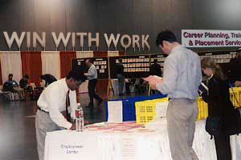Brian
Lee's resumé showcases the mad skills of a motivated, dynamic,
detail-oriented I.T. professional with nearly half a decade of industry
experience under his belt.
Through no particular fault of his own, Brian's last job ended rather
unceremoniously
during a round of layoffs. At
age 28, he finds himself having been unemployed for close to five
years. Lately he's been checking out weekly job fairs at the local
community college, but so far the leads have been dismal.
He's starting to suspect there's some kind of conspiracy
afoot, one meant to squish flat the essential bare necessities of
young people trying to make it in the world. Needless to say, he's
more than a whisper paranoid. "These days it seems like
even homeless people have better prospects than I do,"
Brian laments. "At least they've accepted their situation. I'm harboring
a lot of hope and blind faith that I'm gonna get
out of this situation, but the truth is I hate getting out of bed."
|
|
When
his savings account sagged just below twenty dollars, he grabbed a
handful of change and hopped on a bus to Placement Strategies, a temp-to-perm
employment agency square in the middle of downtown.
He'd never been there before. The parking lot was filled with BMWs,
Jeep Cherokees, Mercedes convertibles and brand new
Explorers. He liked the abstract art hanging in the lobby.
Lush carpeting ran the length of looming mahogany hallways, offering
Brian immediate sanctuary and much-needed relief from his anxieties.
But after the receptionist greeted him with a half-hearted hello and
virtually no eye contact, everything fell apart. Nothing at Placement
Strategies was what Brian expected, and the whole "temp agency" experience left him with a
terrible taste in his mouth. |
| "I can do anything," Brian says. "I was jockeying for some kind
of systems administration position, but all they seemed to care about
was my typing speed. They treated me like a
retarded child. Like a data entry clerk."
|
Above: an ASIC designer places his fingers on the home keys. |
Placement Strategies set him up with an outdated version
of Microsoft Word, a pair of tubular headphones, and the audio
cassette of Tom Clancy's Air Force One, voiced by Wilford
Brimley.
The test was administered on an outdated PC with a dusty keyboard
yellowed with age. The software measuring his words
per minute didn't allow him to use the backspace key, so it looked
as though he was making dozens of mistakes. And then that was it.
The "introductory interview" was all over, and his resumé was
more or less politely dismissed. Brian grew incensed.
"I possibly raised my voice and
said some stuff," he remembers. "I specialize in server configuration.
Who the hell cares if I type thirty words a minute? I don't transcribe
fucking novels, I type filenames and cd
into dirs." |
| Junior Placement Strategist Dr. Edward Macavee [right]
was up front about Brian's test scores.
"His performance was disappointing to say the least.
We don't calculate how many words you can delete per minute.
Maybe when you're at home alone with the bong and your IRC friends,
missed keystrokes aren't a big deal. But a number of our clients
work on Wall Street, and typos there aren't gonna fly."
"When he finally left at three o'clock, Brian seemed bitter. He
insisted on taking the test again, suggesting I was somehow related
to Adolf Hitler. I gave him my speech about how
I'm sorry, how I don't make the rules... but I was shaking inside.
I was worried he'd come back with a rifle and take everyone out. He didn't seem like someone we'd feel comfortable
sending out into the world attached to our company's name and
reputation."
|
|
| Chad Willets was the receptionist that day. He's a thin,
sharply dressed 20 year old who speaks clearly and distinctly,
enunciating every syllable. He's outspoken, and not afraid to lay
it on the line. |
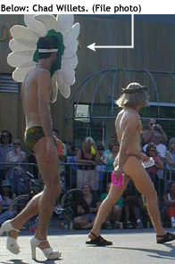
"Most candidates have a two-pronged strategy," he whispers. "Hoping
and moping. This isn't Jobs-R-Us, it's Placement Strategies. When
a mortgage company wants a data entry clerk, they want a chirpy, pleasant
blonde girl with a nice smile. Someone with an extensive
wardrobe of interesting clothes which aren't from Mervyns.
Someone who isn't jaded or sarcastic after five years of service in
the field. When a brokerage firm is hiring developers, again that's
code for send us a girl. That's all anyone
cares about anymore. Girls and blondes. These men in their offices
work hard. These are fucked-up times and
men need something to look at. Even women with smaller boobs
are securing rewarding careers." |
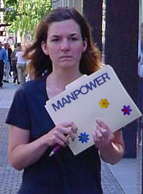 |
| Puzzle:
Which of the following four applicants is ineligible for hire? |
|
Chad's
supervisor, Barbara Flack [right], remembers Brian - but just barely.
Today she's peering through the rippled glass of her quiet office,
observing the latest crop of applicants.
They sit in straight-back Ikea chairs, clutching clipboards, filling
out preliminary paperwork with stubby golf pencils.
Some of them are bouncing their knees up and down. Others are staring
at the ground. Roberta's face is tightly pinched into a spazzed-out
Prozac smirk, like she wants a cigarette.
"More systems guys with scruffy beards," she
sighs. "I count one, two, three pot bellies. Each with a
T-shirt bearing the name of some ridiculous software product I've
never heard of." |
| She pauses. "Now one of them is talking to someone.
They're laughing about something. Christ, they're sitting there like
lumps waiting for something magical or positive to happen in their
lives. They've come here from twenty miles away on the bus or the
train just to get their heads chopped off in the big city." |
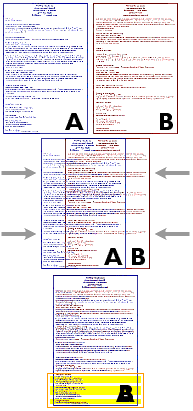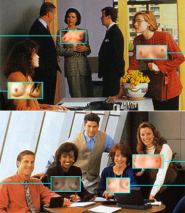Formerly
with Oxford and Associates, Barbara has seen it all. Applicants who
don't do their laundry. Thirty-two year old men who arrive stoned
in the middle of the afternoon. She holds two different resumes up
to the fluorescent light, superimposing on one top of the other.
"Interesting," Barbara muses. "These guys have identical work
histories, and each lists the other as a reference."
She hauls open a long metal filing cabinet packed with paper, and
struggles to stuff the incoming applications somewhere toward the
back.
"These dumbshits waltz in with forged documents containing phone numbers
of friends willing to pose as former employers. Like we've never seen
that before. Then they shuffle out disappointed, wondering why we
can't or won't place them." |
| 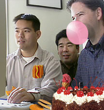She
confides: "Systems administrators used to be mollycoddled with dainty
chocolate croissants piled high in every conference room. Same with
web designers, Java programmers or anyone claiming proficiency with
3D Studio Max. These days they're all just spoiled,
disposable human beings. They're a dime a dozen."
Barbara is weary of the sarcastic remarks her
applicants mutter under their collective breaths. She's sad to report
that nobody wants them, not even at nine bucks an hour.
"I'd rather give my money to homeless people,"
she chuckles. Meanwhile, Brian Lee sits at the bus stop contemplating
his sorry situation. He faces a forty-five minute journey
back home, unless there's rush-hour traffic. It's the first of the
month, and his rent is due. He stares out the window, with nothing
further to say.
|
|
|
But thirteen stories above his head, in the same business
tower as Placement Strategies, entrepreneur Paul Humphries surveys
the city skyline with a pair of binoculars. He refers to himself
as a placement strategist of a different color, snorting at individuals like Brian, whom he labels a procrastinator.
"Guys like that love complicating their lives trying
to work for someone else. What if they stopped being pussies for
a split second and started taking a few real risks?
All you have to do is check your ego at the door, find something
simple which makes money, and the rest of your problems are solved.
Excuses are like elbows: everybody's got one or two and they're
all knob-shaped." |
| He motions this reporter over to the window. "Look at that
guy down there selling Street Sheet. It's a generic homeless
rag, full of miserable poetry and anti-gentrification
whatnot. Even though he's wearing the regulation cornflower blue long-sleeved
collared shirt and charcoal Gap slacks, he won't sell a single copy.
I suspect he'll be out there all afternoon broiling under the sun.
But at least he's trying. At least he's got a product to push." |
| 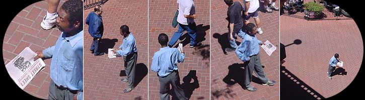"Yo
yo - who's up for the truth today? You sir?
Ma'am, can I interest you? Folks how's it going today?
Oh goddamnit." |
Paul's product is the Homeless Simulation Structure, something he came up
with six months ago after noticing something remarkably simple: homeless
people appear to do little more than just sit on the ground jingling a tin
cup, but still they manage to earn enough to stay alive week after
week. How is that even possible in a new millenium, where people need computer
skills to stay afloat? One common thread immediately ascertained is that
all these folks want help - and they're not afraid
to ask for it by name.
Paul
began studying homeless patterns the way an
oil painter might observe a landscape. "The most successful people
are those who are quiet, unobtrusive, almost completely out of sight.
If someone's all in your face, chasing you down the street, blubbering
away about how their car broke down or their wallet got stolen, your
brain clamps down and your purse strings draw shut. What a bunch of
horse shit. Get away from me. But if you're just
laying there sick-looking, totally harmless, the chances are much
greater you'll earn my respect."
Charitable contributions are predicated around the notion that
there really is a human being underneath every dirty
blanket, inside every cardboard box, or wedged way over yonder behind
that tumble-down shopping cart. The more Paul contemplated the different
lumps lounging around town, the more he wondered: what if they
didn't exist at all? What if that "homeless person"
camped outside McDonald's was really just a pair of plastic mannequin
legs partially hidden under a tarp? |
| 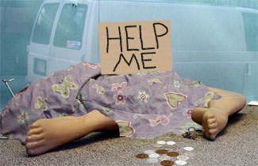 |
On a whim one morning, Paul assembled just such a prototype and
laid it forth facing a bustling street corner. To his astonishment,
it started making money within fifteen minutes.
Businessmen, mothers and grandmothers, even tourists stopped dead
in their tracks. Coins and dollars leapt from their pockets in earnest.
Not once did anyone stop to consider they were being
duped.
At the end of the day, Paul Humphries walked home with
ten dollars in change, a Chuck E. Cheese token, and a Burger King
coupon.
|
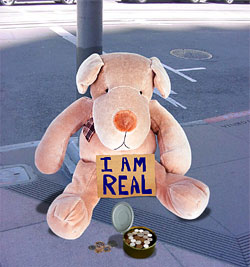
Early the next morning, filled with a newfound sense of
experimentation, Paul substituted an oversized stuffed animal in place
of the legs. This tactic generated some revenue, but not
as much as he would have liked.
"Stick with a more realistic structure," he cautions. "The
floppy dog thing lasted exactly one afternoon and the results were
pretty much what you might expect. Nobody was particularly fooled
and the donations I accumulated weren't worth my getting out of bed."
He believes the all-important money cup will never be stolen,
as most everyone's unspoken assumption is that inside the structure
lives a desperate, possibly violent person who
sleeps with one eye open. Someone who's more or less hard to steal
from, someone who'd get very pissed off if anyone tried to dip into
his cash box. That message just isn't communicated with the presence
of cutesy artistic flair. |
Paul reminds us that no real crime beyond littering city
streets has taken place, and he insists that all his structures
have been assembled from household materials. Just roll a pair of tube socks
down the fat ends of a couple baseball bats, and attach flip-flop sandals
or worn-out tennis shoes. Leave them sticking out a few inches from underneath
a tarp to flesh out the illusion of a human being. Who
stares at a homeless guy's legs for more than a couple of seconds?
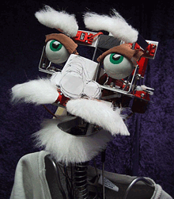
Believe it or not, it was that initial Chuck E. Cheese token
which inspired Paul to move forward with his next endeavor: animatronic
homeless people capable of delivering prerecorded pleas for cash,
voiced by Wilford Brimley.
Pictured [right] is the skeletal prototype of "Clyde," in
one of his earliest incarnations. Clyde was beta-tested in Chicago
and New York, where he sat in one place for eight hours. At the end
of his shift, he'd earned sixty dollars! |
#
HSS randomly rotating phrases
# broadcast when triggered by
# motion sensor (rev 3.4.3)
%ClydeStrings =
(
"p0" => "Can I have some change?",
"p1" => "Can I have some change?",
"p2" => "Can I have some change?",
"p3" => "Can I have some change?",
"p4" => "Can I have some change?",
"p5" => "Can I have some change?",
"p6" => "Can I have some change?",
"p7" => "Can I have some change?",
"p8" => "Can I have some change?",
"p9" => "Can I have some change?"
); |
| 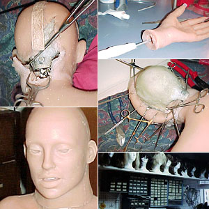 |
But Paul's business really blossomed
after striking a quiet deal with the Real Doll Corporation, a company
known for life-size silicon-based
sex partner substitutes. His structures since then have grown so elaborate, so detailed
and realistic you'd swear he's commissioned a battery of Disney's
Imagineers.
"I enjoyed Spielberg's A.I. and I love the Jamboree
Bears," he says. "Certainly each has its own
novelty, but neither is designed to put food on my table. They're
examples of what I call technology going to waste."
Like any cinematic special effect worth its salt,
subtlety is the goal. The latex surrounding each human figure is
cured in the sun to provide a weather-beaten appearance. Costumes
courtesy of the Salvation Army. |
| He gestures toward "Stephen,"
a mopey, silicon-filled human form complete with scraggly blonde horsehair
and thrift store clothes. A small motor allows him to wobble slowly
back and forth, rotating a cardboard sign along the pivotal axis of
his left wrist. Total cost: $8000.00. |
| 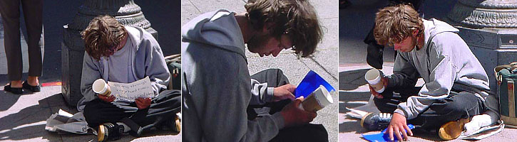 |
"You just don't want people to know one way or another what's going on,"
Paul whispers. "Maybe Stephen's a teenage runaway down on his luck, maybe
he's an animatronic robot I licensed from Chuck E. Cheese. People feel a
little empathy and they chip in. That's the name of the game. He's practically
my son. And wouldn't you know it, he's got a great job and he supports his
family. Stephen cleans up big time."
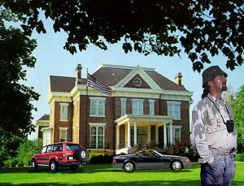Granted,
a handful of dollars here and there may not seem like much for all the
trouble Paul's gone through. But in six short months, he's installed fifteen
hundred fake homeless people in major cities across the United States.
The daily net of Paul's invisible army averages close to $100,000.
What it loses on weekends it more than makes up for during Thanksgiving
and Christmas. Homeless Simulation Structures earn Paul well over three
and a half million dollars a year, and every last coin is tax free.
"This October I'm buying my second house," he beams with pride. "Near
the beach. No homeless types whatsoever. No one bugging me for stuff.
I've already hired a few of my girlfriends to go running around collecting
cash from all the cups, and things are going just great. I could never
go back to a goddamn cubicle. Not in a million years. I'm more than happy
squeaking by on my hourly wage. I've got a life to live, and I'll bet
you do too."
|
Pornopolis |
Rotten |
Faces of Death |
Famous Nudes
|